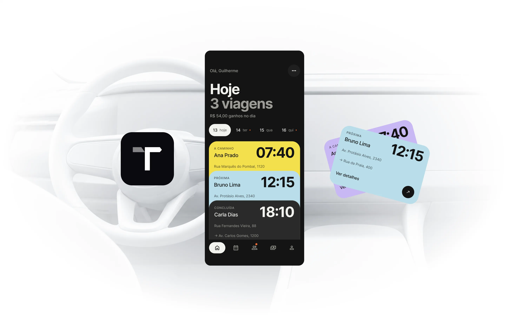
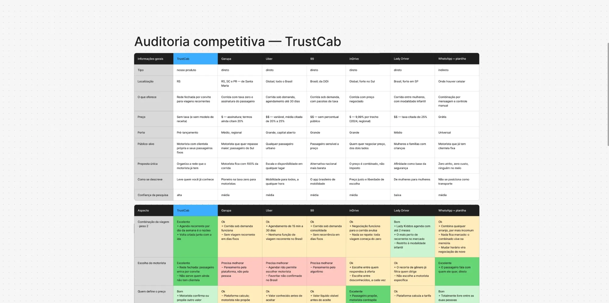
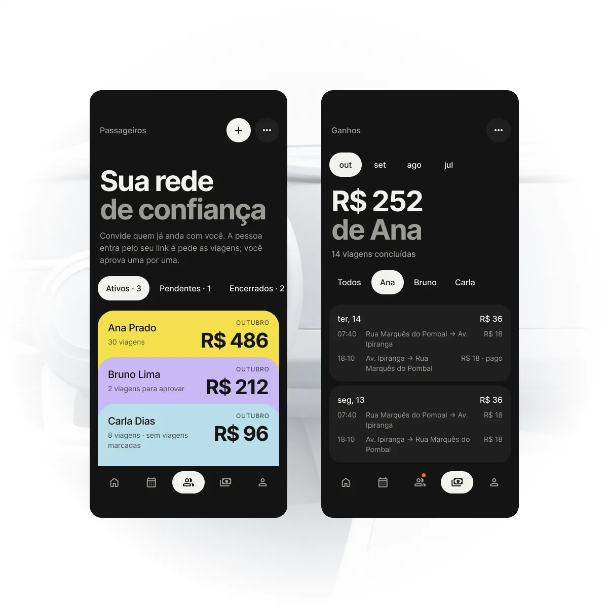
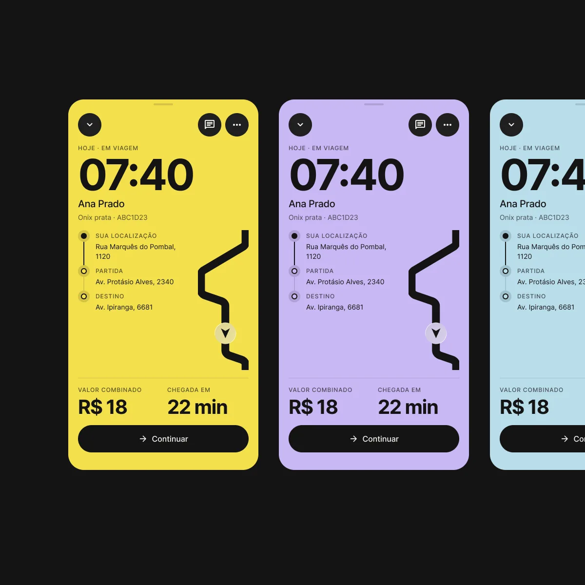
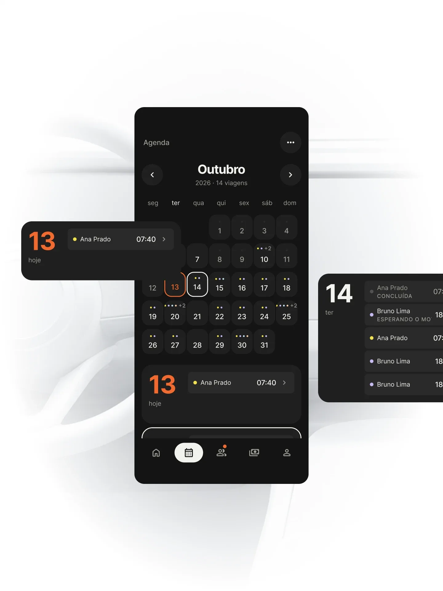
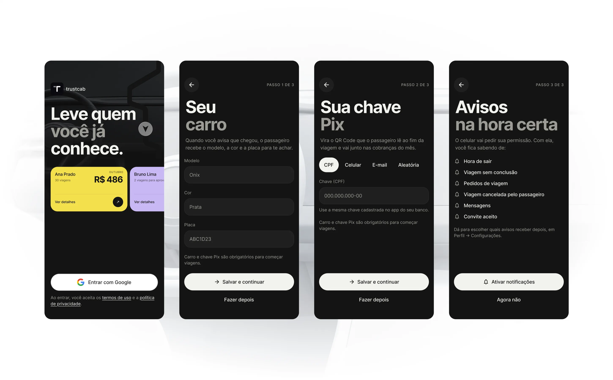
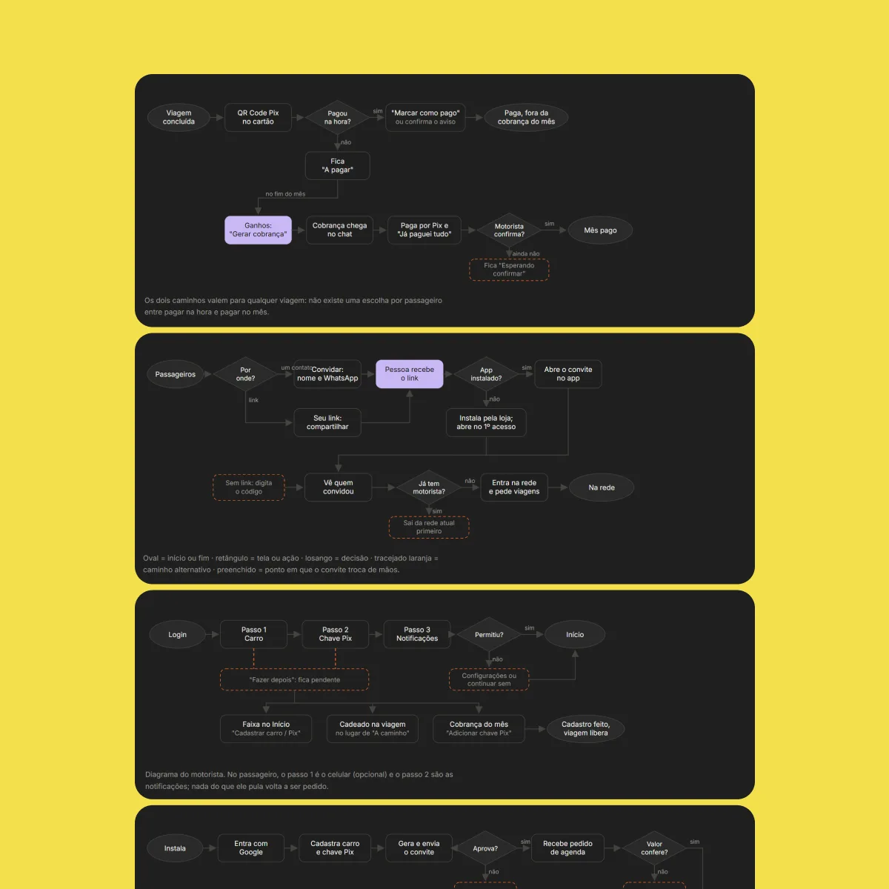
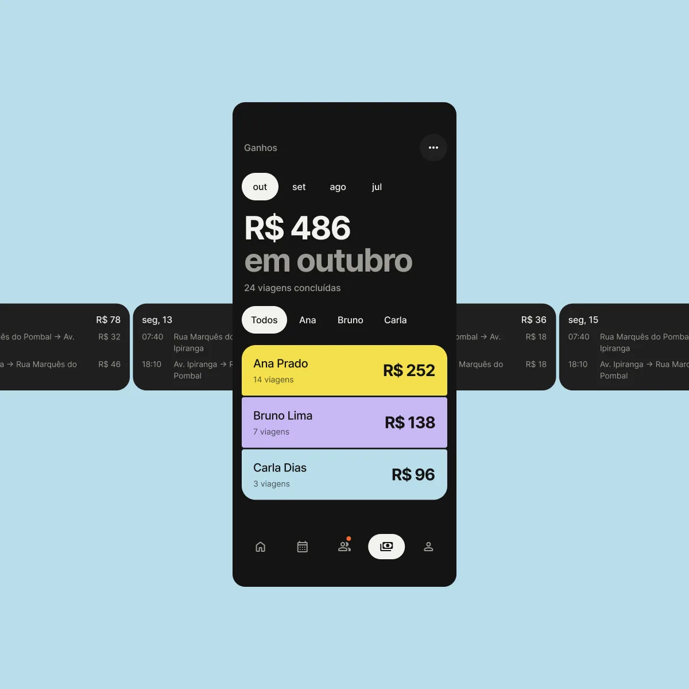
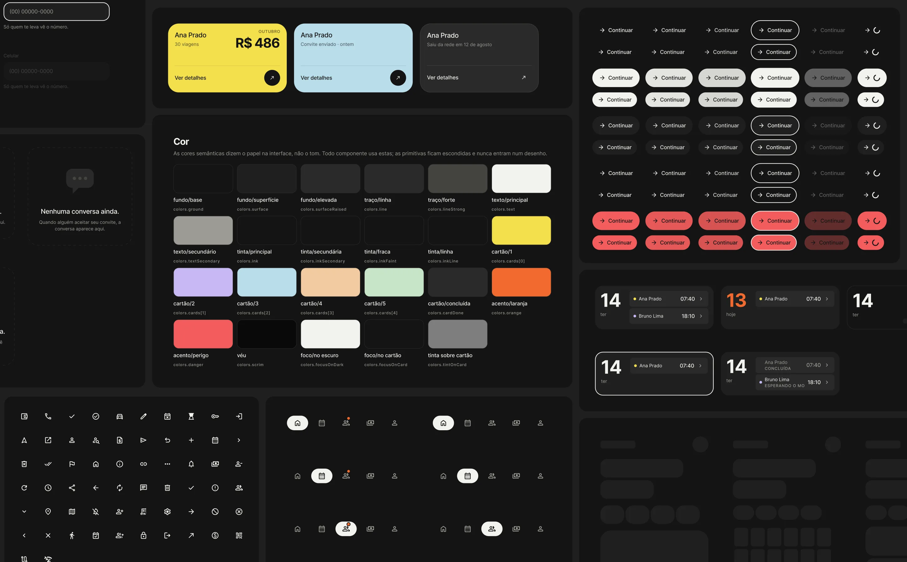

Mobile app (Android) · Mobility · 2026
TrustCab
A ride app for drivers who take people they already know. Passengers join the driver's private network by invite, ask for trips, and pay by Pix. I designed the app from the first flows to a coded prototype and its design system.
- Trips arranged on WhatsApp
- 82%
- Drivers who arrange their trips over WhatsApp
- Regular private rides
- 37%
- App drivers who also drive people they know, on a regular basis

Challenge
Many drivers already have regular passengers: neighbours, coworkers, the same school run every morning. They arrange it all over WhatsApp, keep track of trips in their head and collect payment at the end of the month.
Ride apps are built for strangers. TrustCab is built for this smaller, trusted circle, so the driver can see the day, the people and the money in one place.
Research
I sent a questionnaire to 100 people: app drivers, and car owners who give regular rides to people they know. It showed how much of this already happens off the apps: 82% arrange their trips over WhatsApp, and 37% of app drivers also drive people they know on a regular basis.
A competitive audit compared the closest alternatives, Garupa, Uber, 99, inDrive and Lady Driver, plus the way most drivers do it today: WhatsApp and a spreadsheet. I looked at their features and, above all, at how each one charges drivers and prices trips. Most take a percentage of every ride, which led to a different model for TrustCab: pricing that scales with the number of active passengers, not a cut of each trip.

Solution
-
A network by invite
The driver shares a link, and the passenger joins their network and asks for trips. The driver approves each request, so nobody outside the circle gets in.
Trade-offA closed network doesn't help drivers who don't have regular passengers yet.
-
Passengers at a glance
The home screen shows the day's passengers as colored cards, one color per person, with the time and pickup address. One tap on a card starts the trip.
Trade-offIt assumes drivers have few regular passengers, so it favors a clear view and a quick tap over handling a long daily list.
-
No maps in the MVP
The driver knows the passenger and the trips repeat, so they already know the best routes. The trip screen keeps to the stops, the agreed price and the arrival time.
Trade-offThe app suggests no better routes, so the driver has to know the way before the trip.
-
Charges by person and month
Drivers were already charging their contacts over WhatsApp and Pix. The MVP keeps that habit and automates it: each trip ends with a Pix QR code or goes on the monthly charge.
Trade-offThe money moves outside the app, so the driver still confirms each payment.



Flows
The user flows I mapped:
- Invite a passenger. The driver shares a personal link or a code, and the passenger joins the network from it.
- Run a trip. From the home card to on the way, arrived and done, with the stops and the agreed price on one screen.
- Request recurring trips. The passenger picks the days and times once; the return trip is created with the outbound one.
- Approve recurring trips. The driver confirms the price or proposes another, and the passenger accepts it.
- Cancel trips. Either side can cancel a trip, and the other one gets a notification right away.
- Generate monthly charges. At the end of the month the driver sends the charge, the passenger pays by Pix and the driver confirms it.



Design system
48 components work in both apps, the driver's and the passenger's, from a single design system integrated with Storybook. Semantic color tokens describe the role in the interface, not the tone, and every component uses them.
